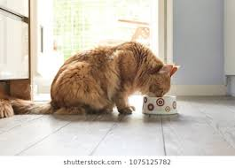
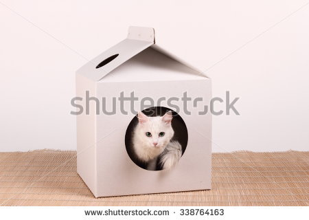

Cats require taurine, an essential amino acid, for heart and eye health. The food you choose should be balanced for the life stage of your cat or kitten. Properly balanced foods will contain taurine.
You will need to provide fresh, clean water at all times, and wash and refill your cat’s water bowls daily.
Treats should be no more than 5-10% of the diet.
Many people feed baby food to a cat or kitten who is refusing food or not feeling well. Please read labels carefully: If the baby food contains onion or garlic powder, your pet could be poisoned.
Take your pet to your veterinarian if signs of anorexia, diarrhea, vomiting or lethargy continue for more than two days.

Cats are naturally equipped with the implements to groom themselves: a barbed tongue with which to lick, forepaws they moisten with saliva and use as a surrogate washcloth, and teeth to dig out tougher debris.
For shorthaired cats, use a fine-toothed metal comb weekly and a natural-bristle or rubber brush to remove any dead hairs. Gently brush your cat's hair in the direction it grows. Use the bristle brush to sweep the coat up, and then smooth it down again.
For longhaired cats, groom daily with a steel comb. Any knots can be teased out with your fingers or cut carefully with blunt-ended scissors. You may want to get your vet to help you as it is very easy to cut the skin.
To pick up your cat, place one hand behind the front legs and another under the hindquarters. Lift gently. Never pick up a cat by the scruff of the neck or by the front legs.
Your pet should have her own clean, dry place in your home to sleep and rest. Line your cat's bed with a soft, warm blanket or towel. Be sure to wash the bedding often.
Please keep your cat indoors. Outdoor cats do not live as long as indoor cats. Outdoor cats are at risk of trauma from cars, or from fights with other cats, raccoons and free-roaming dogs. Coyotes are known to eat cats. Outdoor cats are more likely to become infested with fleas or ticks, as well as contract infectious diseases. Cats do not respond well to being both outdoor and indoor cats.

All indoor cats need a litter box, which should be placed in a quiet, accessible location. In a multi-level home, one box per floor is recommended. Avoid moving the box unless absolutely necessary, but if you must do so, move the box just a few inches per day.
Keep in mind that cats won't use a messy, smelly litter box, so scoop solid wastes out of the box at least once a day. Dump everything, wash with a mild detergent and refill at least once a week; you can do this less frequently if using clumping litter. Don't use ammonia, deodorants or scents, especially lemon, when cleaning the litter box.
If your cat will not use a litterbox, please consult with your veterinarian. Sometimes refusal to use a litter box is based on a medical condition that required treatment.